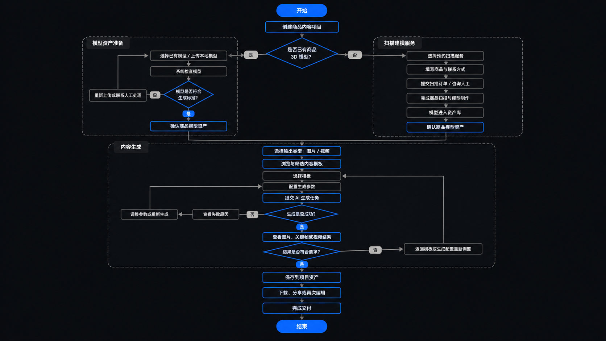
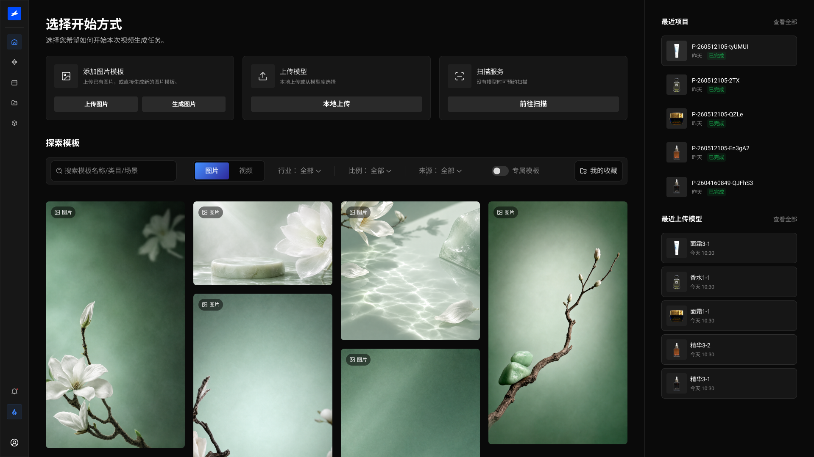
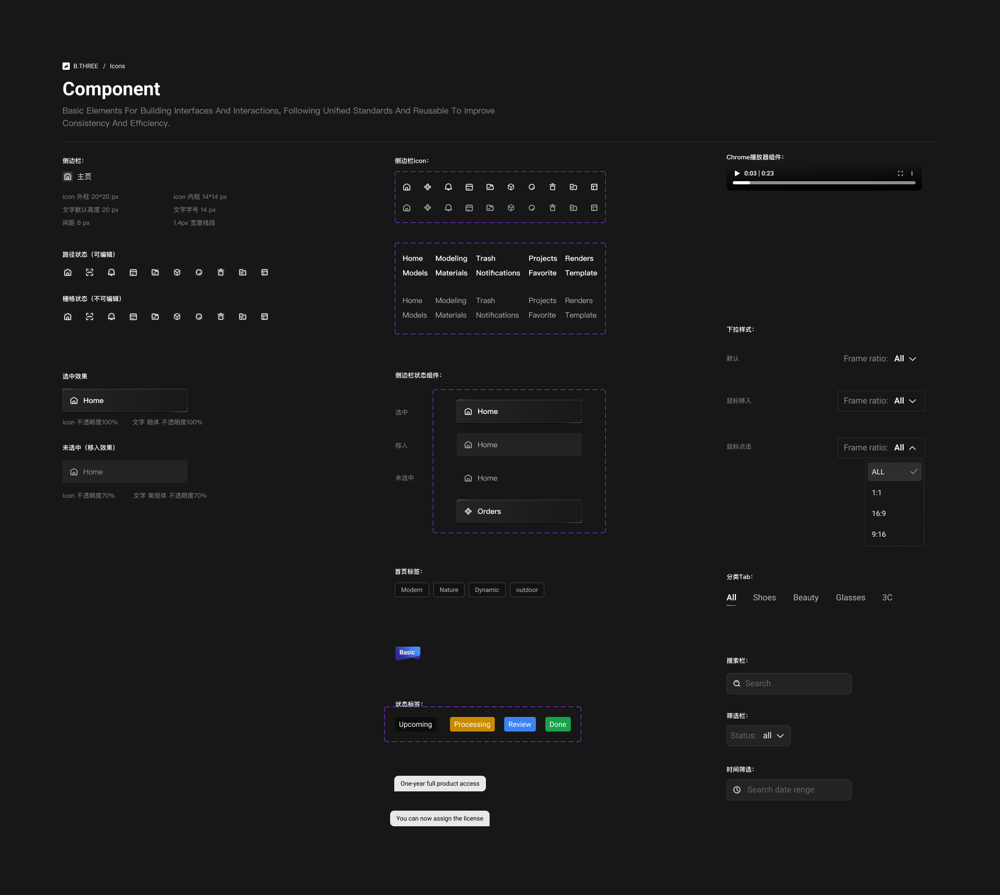
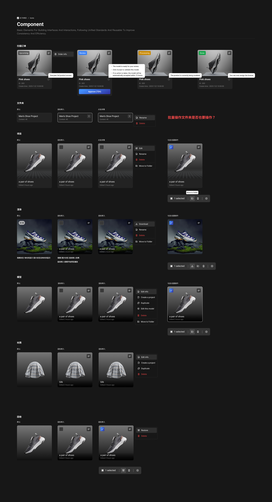

在 Figma 中完成核心流程、组件与基础设计规范。
01 / B.THREE AI CONTENT PLATFORM
B.THREE
AI 商品内容平台
从 0 到 1。
B.THREE 是面向品牌方与电商内容团队的 B 端 AI 商品内容生产平台。我负责把商品模型、内容模板、AI 生成与项目交付组织成可用的生产链路，并在后期迭代中引入 AI 协助需求整理、流程推演、UI 探索与前端验证。
先了解这个项目 ↓02 / PROJECT OVERVIEW
一套面向品牌内容团队的 B 端 AI 生产平台。
B.THREE 是面向品牌方、电商内容团队与平台服务人员的 B 端 AI 商品内容平台。用户上传已有 3D 模型；没有模型时可预约扫描服务，获得模型后选择专属模板，生成图片、关键帧与视频，并将结果沉淀为项目资产。
- 项目类型
- B 端 AI 商品内容生产平台
- 服务对象
- 品牌方｜电商内容团队｜平台服务人员
- 项目阶段
- 从 0 到 1｜正式上线｜持续迭代
- 我的职责
- 产品体验｜UI 视觉｜设计规范｜前端验证
打通模型准备、模板选择、内容生成与项目资产管理。
在后期迭代中用既有规范约束需求、流程、UI 与文案推演。
通过 Codex 验证真实页面，由我评审、修正并完成开发交付。
03 / PRODUCT CHALLENGES
平台真正需要解决的，是商品一致性与规模化交付。
品牌客户并不关心底层 AI 与 3D 技术如何运行，他们需要在不同模型条件下开始任务，稳定保持商品一致性，并能够管理生成过程与最终交付。
商品模型来源不同
已有模型的客户可以直接上传，没有模型的客户则需要预约扫描；两种起点最终必须汇入同一条内容生产路径。
商品一致性难控制
图片、关键帧和视频需要围绕同一商品模型持续生成，避免外形、材质与品牌特征在不同内容中发生漂移。
专业参数难理解
模型、模板、渲染、打光和 AI 适配需要转换成品牌客户能够判断的业务选项，而不是暴露复杂技术参数。
生成结果不等于交付
团队还需要管理文件夹、任务状态、失败结果、输出规格和交付版本，让一次生成沉淀为可复用项目资产。
设计目标：先固定商品主体，再把模板与生成能力转化为可判断的操作，最后让所有结果回到可管理、可复用的项目资产。
04 / AI-ASSISTED PRODUCT WORKFLOW
AI 缩短的不是思考，
而是从需求到验证的距离。
传统流程中，需求文档、流程图、原型与开发评估依次交接；在 B.THREE 后期迭代中，我把真实需求、业务规则和既有设计规范整理成 AI 上下文，让这些步骤在同一个设计循环中更早发生。
- 01产品输出 PRD
- 02设计梳理流程图
- 03绘制低保真原型
- 04与开发评估可行性
- 05回到设计继续修改
- 01输入需求与业务约束
- 02同步推演流程与异常分支
- 03生成可讨论的原型骨架
- 04调用设计规范生成高保真方案
- 05在真实前端中验证并修正
05 / ONE REQUIREMENT, ONE AI LOOP
一条真实需求，如何从描述走到可开发页面。
以下用“没有 3D 模型的客户也能开始任务”这一条需求，说明 AI 参与的位置，以及我必须完成的判断。

没有 3D 模型的客户，也要能够开始任务。
这不是简单增加一个入口，还涉及扫描服务、模型生产周期、任务状态和后续生成条件。
快速补齐角色、前置条件与异常分支。
AI 把口头描述展开成多套流程草案，并标出需要产品、设计和开发共同确认的问题。
“可用商品模型”仍然是进入生成链路的唯一前提。
上传模型与预约扫描不是两套产品流程，而是两种模型准备方式；模型就绪后统一进入商品资产。
两个起点，一条稳定的内容生产路径。
客户可以从不同条件开始，但模板选择、内容生成和项目交付始终围绕同一个商品资产继续。
06 / DELIVERED PRODUCT FLOW
两个模型起点，最终汇入同一条内容生产链路。
用户只有两个模型起点：上传已有 3D 模型；没有模型时预约扫描服务。模型准备完成后，再进入模板、生成与项目资产环节。

设计决策将内容入口与模型准备放在同一工作台，但始终以可用的商品模型作为稳定生成的前提。
07 / DESIGN CONTEXT & HANDOFF
一套规范，同时约束设计、AI 输出与开发验收。
已经验证过的品牌色、排版、组件、状态、业务对象与开发约束共同限制 AI 输出，也成为设计评审与前端验收的依据。
向 AI 明确近黑工具界面、品牌蓝操作焦点、语义状态色和对比度规则，限制视觉输出的基本方向。

把真实组件和状态作为 AI 的参考边界，避免新方案脱离已有产品语言。

先向 AI 说明业务对象及其关系，再让它参与流程与页面方案推演。
08 / DELIVERY & OUTCOME
平台正式上线，并进入真实品牌项目。
- 01
完成正式上线与开发交付
B.THREE 已完成开发交付并正式上线，核心链路覆盖模型准备、模板选择、内容生成和项目资产沉淀。
- 02
进入真实客户项目
平台已用于百雀羚的真实品牌项目，设计方案从内部验证进入实际商品内容生产场景。
- 03
核心生产链路完整落地
不同模型起点、模板选择、图片与视频生成、任务状态及项目资产管理被组织为一条可持续使用的产品链路。
- 04
为后续迭代留下统一基础
组件规范、业务对象和验收标准已在真实页面中对齐，后续功能可以沿用同一套产品语言继续扩展。